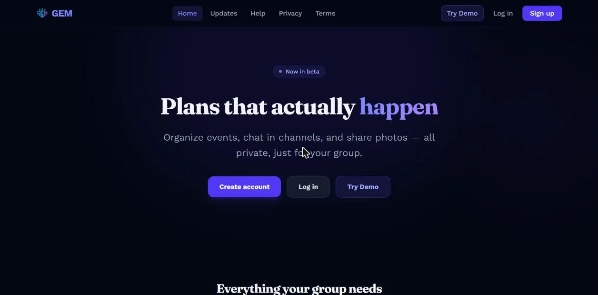
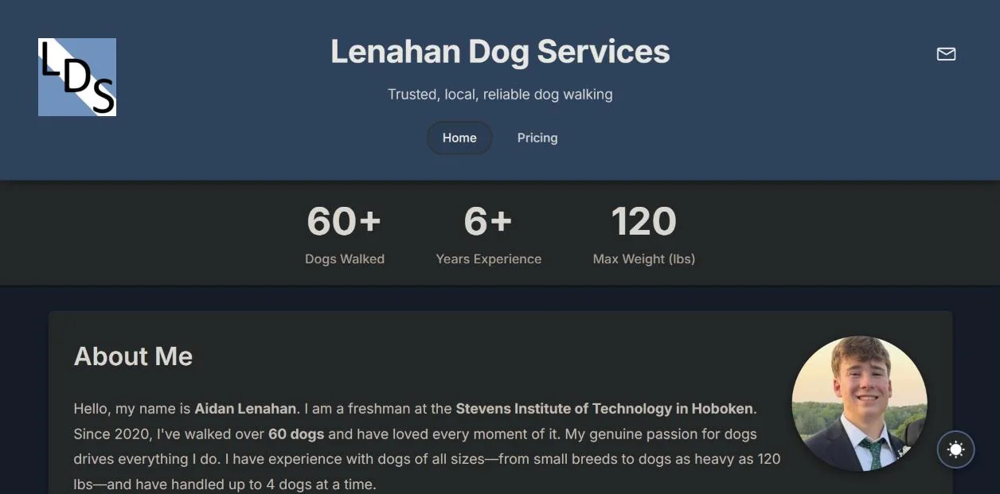
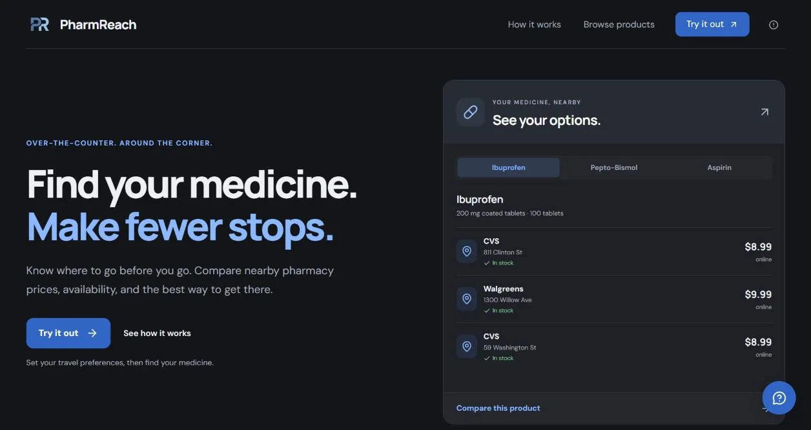
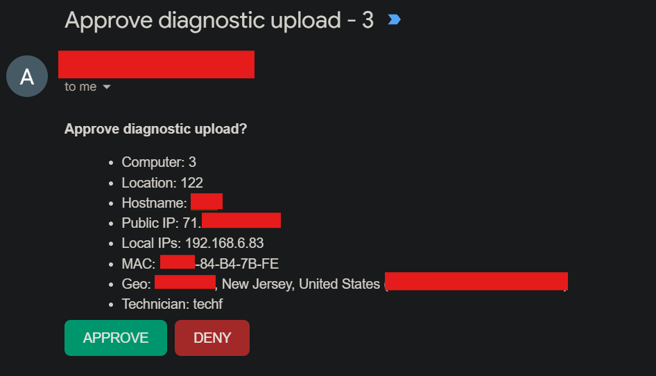
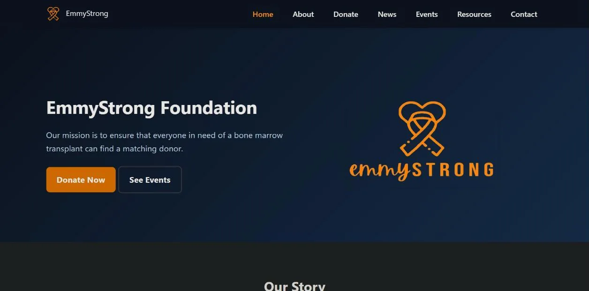
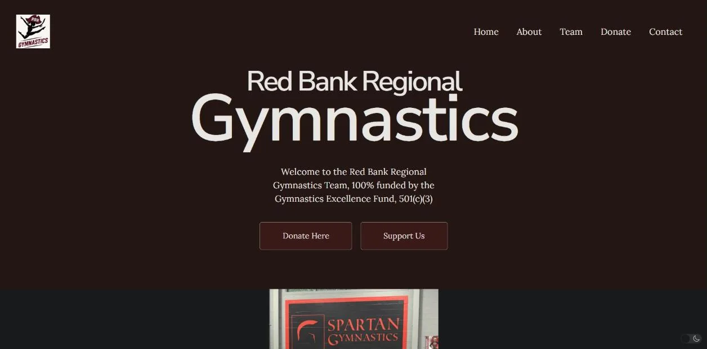
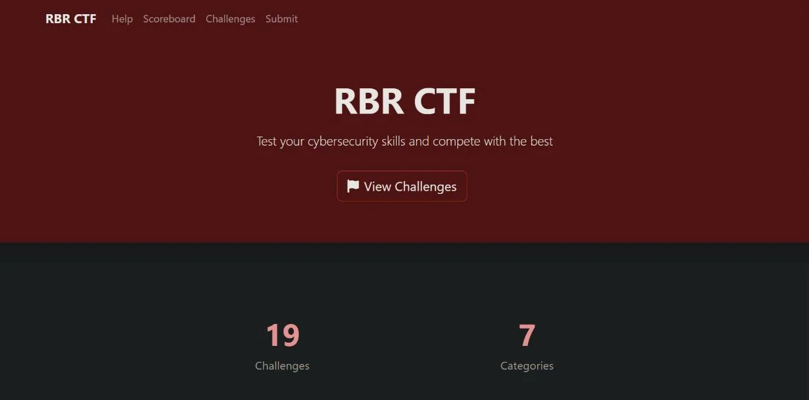

All projects

GEM (Group Event Manager)
GEM (Group Event Manager) is an installable progressive web app that gets friend group plans out of the group chat and into reality. Private groups get events with RSVPs, tags, and…

Professional Dog Walking Services
A site for a professional dog walking service with online booking, service packages, testimonials, and service area info.

PharmReach
Built in 24 hours at HackRU 2026. PharmReach helps people in pharmacy deserts find medicine: search for a product and see nearby pharmacies that stock it, with price, location, and…
BucIT Tech Support Platform
Built and deployed a full-stack tech support platform for BucIT, the student Chromebook repair team at Red Bank Regional High School, replacing a paper ticket system where…

secdiagdrop Workstation Diagnostics
Built while volunteering as IT support for a nonprofit whose computers are shared by special needs adults, to replace doing the same cleanup by hand on every machine. A technician…

Emmy Strong Foundation Website
Built emmy-strong.org to support the foundation's mission: ensuring that everyone in need of a bone marrow transplant can find a matching donor. The website serves to raise…

Gymnastics Excellence Fund Website
Designed and developed a responsive website for The Gymnastics Excellence Fund, a nonprofit that fully funds Red Bank Regional High School's gymnastics team. Built to take…
Personal Homelab Infrastructure
VMs and LXC containers on Proxmox, a NAS, smart home controllers, security services, and monitoring. A sandbox for learning, hands-on, the same tools IT teams run in production.

High School CTFd Platform
Created and administered a CTFd instance at Red Bank Regional High School, developing dozens of capture-the-flag cybersecurity challenges for peer participation. Challenges cover…

Automated Pantry Lighting System
Designed and assembled a hardware-based automation system that powers LED strips when a pantry door opens. Used a 12V relay module triggered by a magnetic reed switch, implementing…